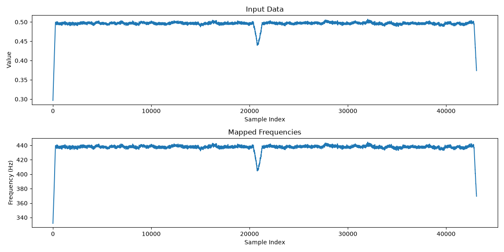
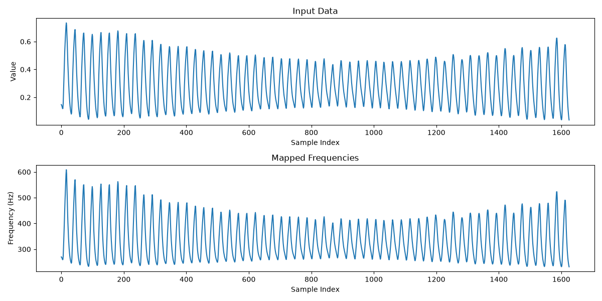
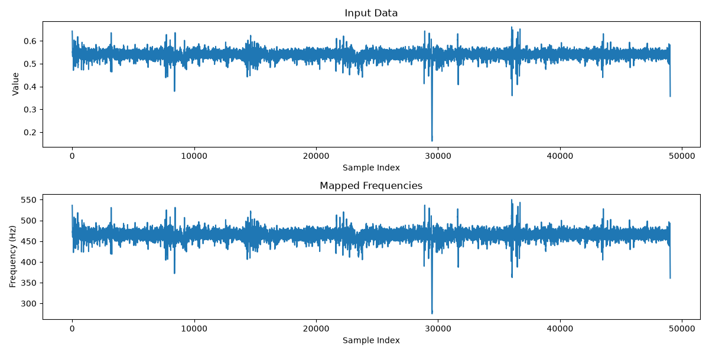
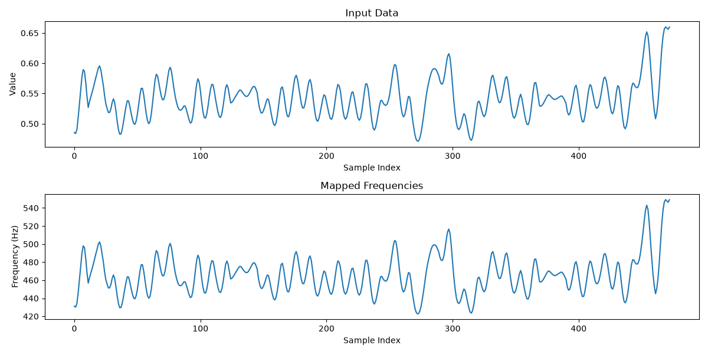
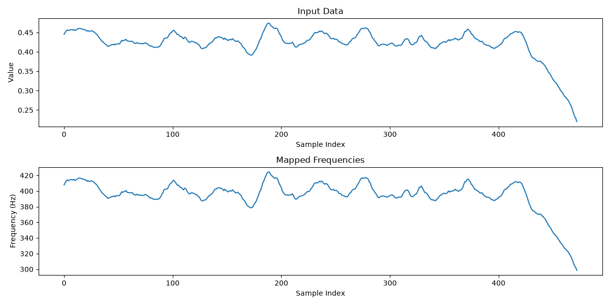

Kepler-10
Mostly stable brightness with subtle variations.
Listen to the light of the stars. Cosmophone maps astronomical brightness variations to audible frequencies.

Mostly stable brightness with subtle variations.

A repeating pulsation pattern.

A slower, regular stellar cycle.

Sharp changes associated with eclipses.

Irregular brightness variations and abrupt events.